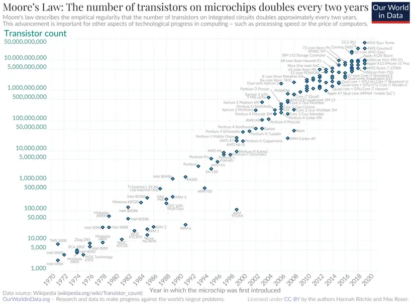
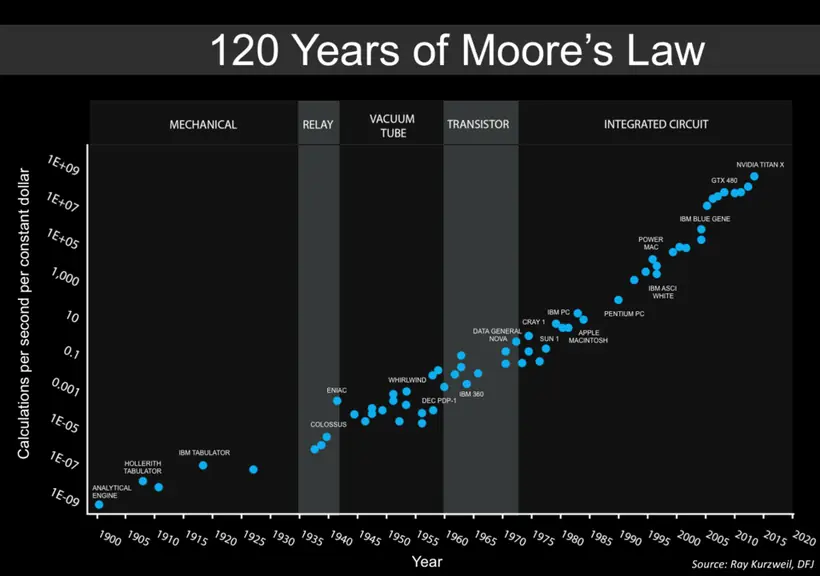

What actually ended
Gordon Moore's 1965 observation, revised in 1975, was that the number of components per integrated circuit doubled roughly every two years at falling cost per component. The industry adopted it as a target, and the International Roadmap for Devices and Systems has tracked the consequences ever since.
Maps, diagrams and images





What ended is the combination of density scaling and clock-speed scaling that gave every generation a free speed-up. Dennard scaling — the rule that shrinking transistors kept power density constant — broke around 2005. Since then clock speeds have barely moved, and the gains have come from more cores and from architecture rather than from frequency.
Transistor density itself has not stopped: current production processes are at the few-nanometre node, with gate-all-around structures and extreme-ultraviolet lithography. But each node now delivers less improvement per dollar, and the leading edge has become extremely concentrated — a handful of firms can build it.
What replaced it
Hennessy and Patterson's argument is that the field moved from general-purpose scaling to domain-specific architecture: specialised accelerators for machine learning, video, networking and cryptography, plus chiplets and advanced packaging that let designers combine dies rather than shrink one.
This is a real change in how progress happens rather than a decline. It also has consequences: software written for one accelerator generation may not run on the next, and the benefits accrue to firms that can afford custom silicon.
False: 'Moore's law is dead, so computing has stalled.' Computing performance per dollar still improves; it just comes from packaging, specialisation and parallelism.
True: the specific exponential in cheap general-purpose transistors is over, and with it the assumption that the next generation of hardware will run the last generation's software faster for free.
Open: whether new materials, three-dimensional stacking or optical interconnect restore the old curve for another decade, and what happens to energy consumption if they do not.
The archive labels this live debate because the end of the trend is documented and the consequences are still being worked out.
Why it is in the archive
Because it is a case where a named 'law' became a cultural shorthand for inevitable progress, and its end is routinely reported as either nothing or the apocalypse.
Related: quantum advantage, scaling laws.
Sources for this page
- Wikipedia, “Moore's law” — history, revisions, the end of scalingen.wikipedia.org
- IEEE, International Roadmap for Devices and Systemsirds.ieee.org
- Hennessy & Patterson (2019), CACM — a new golden age for computer architecturedoi.org
- Wikipedia, “Dennard scaling” — why clock speeds stopped risingen.wikipedia.org
Open resources on this topic
- PapersOpen-access articles: DOAJ · PubMed Central · Internet Archive Scholar
- BooksPublic-domain and borrowable copies: Open Library · Project Gutenberg · Google Books · Internet Archive
Cite this page
Momin, S. (2026). The End of Moore’s Law. The Larger World Archive. https://drsamonline.github.io/LARGE_GLOBE/moores-law-end.htmlMomin, Sohil. “The End of Moore’s Law.” The Larger World Archive, 2026, https://drsamonline.github.io/LARGE_GLOBE/moores-law-end.html.Momin, Sohil. “The End of Moore’s Law.” The Larger World Archive, 2026. https://drsamonline.github.io/LARGE_GLOBE/moores-law-end.html.@misc{the2026moores,
author = {Momin, Sohil},
title = {The End of Moore’s Law},
year = {2026},
howpublished = {The Larger World Archive},
url = {https://drsamonline.github.io/LARGE_GLOBE/moores-law-end.html},
note = {Last reviewed 20 November 2026}
}Last reviewed 20 November 2026 · Corrections policy · this page is not peer reviewed